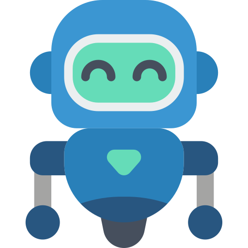
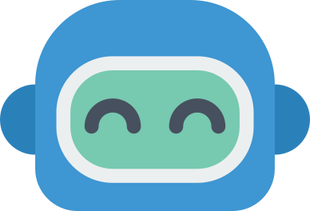

AI print failure
detection.
Meet Gadget.
An extra set of eyes
for your 3D prints.

Meet Gadget.
An extra set of eyes
for your 3D prints.


Gadget checks your camera snapshots
for signs of a failing print.
Let Gadget request a pause
when it detects a likely failure.
Optional. Off by default.
Enable per printer. Set your confidence level.
Requires permission to pause the printer.